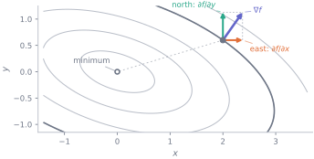
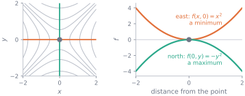
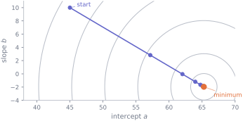

6. Several variables and the gradient
Mathematics · Unit 6
Why this unit is here
Real models have more than one number to choose. A straight line has two; a logistic regression has one per column of your data; a language model has billions. Fitting any of them means adjusting all of those numbers together until the model is least wrong.
This unit is where the one-variable calculus of M3–M5 becomes usable on real models. The tool is the gradient: a list of sensitivities, one per parameter, that answers “if I nudge this one, does the model get better or worse?” for every parameter at once. Following it downhill is gradient descent, and that loop — with no changes beyond the number of parameters — is how essentially every model in modern machine learning is trained.
6.1 Before you start
You should be able to:
- differentiate with the rules, especially the chain rule — M4;
- set a derivative to zero to find a candidate best value, and remember it is only a candidate — M5;
- read a derivative as a sensitivity carrying units — M3;
- do arithmetic on a whole NumPy array at once — P6.
Quick check. Differentiate \(f(x) = (3x + 2c)^2\) with respect to \(x\), treating \(c\) as a constant.
TipShow the answer
Chain rule: outside is \((\;)^2\), inside is \(3x + 2c\) whose derivative is 3. So
\[f'(x) = 2(3x + 2c) \cdot 3 = 6(3x + 2c).\]
The \(2c\) came along for the ride and contributed nothing of its own, because it does not move when \(x\) moves. Holding one symbol still while differentiating with respect to another is the entire mechanical content of this unit; you have just done it.
6.2 The idea
In M5 you summarised the cohort’s scores with a single number \(a\), chose it to minimise \(L(a) = \sum (x_i - a)^2\), and found the mean. One knob, one derivative, one equation.
Now use practice hours as well, and predict a score with the straight line \(\hat{s} = a + bh\). Two knobs. The total squared error is a function of both,
\[ L(a, b) = \frac{1}{n}\sum_{i=1}^{n}\bigl(s_i - a - b h_i\bigr)^2, \]
and asking for “the derivative of \(L\)” no longer has a single answer — for the same reason that in M3 asking for “the rate of change” had no answer until you said where. Here you must say in which direction.
Picture yourself on a hillside in thick fog. Your height depends on two coordinates and you want to get down, but you cannot see the valley. What you can do is feel the ground: step a little east and notice whether you rose or fell, step a little north and do the same. Those two numbers are the partial derivatives, and the fact this whole unit rests on is that on a smooth surface they are enough — from the slope due east and the slope due north you can work out the slope in every direction, including the steepest. (The word smooth is doing real work: a surface can have both partial derivatives at a point and still misbehave in a diagonal direction there. Everything in these notes is well behaved.)
That arrow is the gradient. Everything else in this unit is either how to compute it or what to do once you have it.
6.3 The mechanics
Partial derivatives
The partial derivative of \(f\) with respect to \(x\) is the ordinary derivative of M3, taken with every other input frozen:
\[ \frac{\partial f}{\partial x}(a, b) \;=\; \lim_{t \to 0} \frac{f(a + t,\, b) - f(a, b)}{t}. \]
Only the first slot moves: this is the difference quotient of M3, with \(b\) sitting there unchanged throughout.
So the working rule is: to differentiate with respect to \(x\), treat every other variable as a constant and use the rules of M4 exactly as they stand. No new rules. For \(f(x, y) = x^2 y + 3y - 5\):
\[ \frac{\partial f}{\partial x} = 2xy, \qquad\qquad \frac{\partial f}{\partial y} = x^2 + 3. \]
In the first, \(y\) is a constant multiplier and \(3y - 5\) is a constant, so it differentiates to zero. In the second, \(x^2\) is the constant multiplier of \(y\).
The curly \(\partial\) is not decoration. It says: other variables exist, and they are being held still. Writing \(d\) here would claim there is only one input. Where space is short the same two quantities are written \(f_x\) and \(f_y\).
The gradient
Collect the partials into one object, in a fixed order:
\[ \nabla f(x, y) \;=\; \left( \frac{\partial f}{\partial x},\; \frac{\partial f}{\partial y} \right). \]
Read \(\nabla f\) as “grad \(f\)”. It is not a number — it is a list with one entry per input, and it has a direction as well as a size. (M8 gives that kind of object a proper name and an arithmetic.) Three facts make it useful.
It gives you every direction. Move a small step \((\Delta x, \Delta y)\) from \((a,b)\) and the height changes by roughly
\[ f(a + \Delta x,\; b + \Delta y) \;\approx\; f(a,b) + \frac{\partial f}{\partial x}\,\Delta x + \frac{\partial f}{\partial y}\,\Delta y . \]
This is the local linear approximation of M3 with one term per input, and it is the reason two numbers suffice: the two partials, weighted by how far you step in each direction, give the slope along any step at all.
It points uphill, steepest. Among all directions of the same small length, the one that increases \(f\) fastest is the direction of \(\nabla f\) itself. So \(-\nabla f\) is the direction of steepest decrease — the way down. That claim is checked numerically at the end of this unit rather than asserted.
Its length says how steep. \(\lVert \nabla f \rVert = \sqrt{f_x^2 + f_y^2}\) is the slope in that steepest direction. Where the ground is level, it is zero.
Stationary points, and a new way to be fooled
A stationary point now needs all the partials to vanish at once: \(\nabla f = (0, 0)\) means \(\partial f/\partial x = 0\) and \(\partial f/\partial y = 0\) at the same point. That is a system of simultaneous equations rather than a single one, and as in M5 a solution is a candidate, not an answer. With two variables there is a new way for a candidate to disappoint, with no one-variable analogue: a saddle, which is a minimum along one direction and a maximum along another.

At the origin, \(\partial f/\partial x = 2x = 0\) and \(\partial f/\partial y = -2y = 0\). Both partials vanish and the point is neither best nor worst. In two variables a saddle is a curiosity; with a thousand parameters it is the typical stationary point, and recognising one is a large part of why training a big model is hard.
Gradient descent
For the models in this unit you could solve \(\nabla L = 0\) by algebra, and M11 does exactly that. For most models you cannot: there is no formula, only a function you can evaluate and differentiate. So walk downhill instead. Repeat, from any starting guess:
\[ a \leftarrow a - \eta\,\frac{\partial L}{\partial a}, \qquad b \leftarrow b - \eta\,\frac{\partial L}{\partial b}. \]
Both updates use the partials computed at the old values, and are applied together. The number \(\eta\) (“eta”) is the learning rate or step size. It is yours to choose, and the choice matters:
| \(\eta\) | what happens |
|---|---|
| too small | every step is safe and the loss crawls down; you run out of patience |
| about right | the loss falls quickly and flattens out |
| too large | each step overshoots the bottom and lands further up the far side; the loss grows without limit |
There is no universally correct \(\eta\), because the safe range depends on how sharply the surface curves — and, as the next section shows, on something as mundane as the units your columns are measured in.
6.4 Worked example
Fit a line to the cohort by gradient descent.
We model final score from hours of practice, on the rows where the score is usable. That is the 238-row filter used throughout these notes.
import numpy as np
import pandas as pd
cohort = pd.read_csv("data/cohort.csv")
usable = cohort[cohort["final_score"].between(0, 100)]
h, s = usable["hours_practice"].to_numpy(), usable["final_score"].to_numpy()
print(f"{len(usable)} rows; hours run from {h.min():.1f} to {h.max():.1f}")238 rows; hours run from 1.0 to 36.2The loss is \(L(a,b) = \frac{1}{n}\sum (s_i - a - b h_i)^2\). Differentiate it with respect to each parameter in turn, treating the other as a constant and using the chain rule on the bracket. Write \(r_i = s_i - a - b h_i\) for the residual:
\[ \frac{\partial L}{\partial a} = \frac{1}{n}\sum 2 r_i \cdot (-1) = -\frac{2}{n}\sum r_i, \qquad \frac{\partial L}{\partial b} = \frac{1}{n}\sum 2 r_i \cdot (-h_i) = -\frac{2}{n}\sum r_i h_i . \]
Now descend. First attempt, straight from the raw columns, starting at \(a = b = 0\) with \(\eta = 0.01\):
def gradient(a, b, x, y):
r = y - a - b*x
return -2*r.mean(), -2*(r*x).mean()
a, b = 0.0, 0.0
for step in range(1, 7):
ga, gb = gradient(a, b, h, s)
a, b = a - 0.01*ga, b - 0.01*gb
print(f"step {step} a = {a:>12.4g} b = {b:>12.4g} loss = {((s - a - b*h)**2).mean():>10.3g}")step 1 a = 1.305 b = 21.12 loss = 1.1e+05
step 2 a = -4.352 b = -99.95 loss = 3.58e+06
step 3 a = 29.87 b = 593.4 loss = 1.18e+08
step 4 a = -164.3 b = -3378 loss = 3.86e+09
step 5 a = 949.9 b = 1.937e+04 loss = 1.27e+11
step 6 a = -5431 b = -1.109e+05 loss = 4.15e+12The loss multiplies by about 32 every step. Nothing is wrong with the calculus — the partials are right and the direction is genuinely downhill. The step length is wrong. Practice hours run up to 36, so \(\partial L/\partial b\) carries a factor of \(h\) and comes out about sixteen times the size of \(\partial L/\partial a\) at the start, as the first line of output shows. The surface is a long narrow valley, and \(\eta = 0.01\) is safe for \(a\) and lethal for \(b\).
The standard fix is to put the input on a scale of its own size — subtract its mean and divide by its spread, so it runs over a few units either side of zero:
z = (h - h.mean()) / h.std()
a, b = 45.0, 10.0 # any starting guess will do
for step in range(1, 41):
ga, gb = gradient(a, b, z, s)
a, b = a - 0.3*ga, b - 0.3*gb
if step in (1, 2, 3, 5, 40):
print(f"step {step:>2} a = {a:8.4f} b = {b:8.4f} loss = {((s - a - b*z)**2).mean():9.4f}")step 1 a = 57.1631 b = 2.8270 loss = 154.7954
step 2 a = 62.0284 b = -0.0423 loss = 80.3551
step 3 a = 63.9745 b = -1.1899 loss = 68.4446
step 5 a = 65.0643 b = -1.8327 loss = 66.2340
step 40 a = 65.2718 b = -1.9551 loss = 66.1759Same loss, same two partial derivatives, same descent loop — only the scale of one column changed, and \(\eta = 0.3\) is now comfortable where \(0.01\) was fatal. (The two runs start from different points, which makes no difference here: the surface has one minimum and every starting point reaches it.)

Finally, translate back. A slope measured per standard deviation of practice becomes a slope per hour by dividing by that standard deviation, and the intercept shifts to match:
slope, intercept = b / h.std(), a - b*h.mean()/h.std()
exact_slope, exact_intercept = np.polyfit(h, s, 1)
print(f"gradient descent intercept {intercept:8.4f} slope {slope:+.4f} marks per hour")
print(f"closed form intercept {exact_intercept:8.4f} slope {exact_slope:+.4f} marks per hour")
print(f"agree to 4 dp: {np.allclose([slope, intercept], [exact_slope, exact_intercept], atol=1e-4)}")gradient descent intercept 69.2261 slope -0.2408 marks per hour
closed form intercept 69.2261 slope -0.2408 marks per hour
agree to 4 dp: TrueTwo readings, and the second matters more. The mathematics: an iterative walk downhill has landed on the answer that algebra gives directly, which is the evidence that the walk is doing what it claims. The data: the fitted slope is about \(-0.24\) marks per hour of practice — the model says practising more goes with scoring less. That is a real feature of this dataset and not an arithmetic slip, and it reverses completely once you look within each background group. S12 is about why.
6.5 Try it yourself
Exercise 1 For \(f(x, y) = x^2 y - 4y^3 + 7\), find both partial derivatives and evaluate \(\nabla f\) at \((2, 1)\). Which direction from that point increases \(f\) fastest?
TipShow the solution
Holding \(y\) fixed, \(-4y^3 + 7\) is a constant and \(y\) is a multiplier:
\[\frac{\partial f}{\partial x} = 2xy .\]
Holding \(x\) fixed, \(x^2\) is a multiplier and \(7\) is a constant:
\[\frac{\partial f}{\partial y} = x^2 - 12y^2 .\]
At \((2, 1)\): \(\nabla f = (2 \cdot 2 \cdot 1,\; 4 - 12) = (4, -8)\).
The fastest increase is in the direction of \(\nabla f\) itself: for every 4 you move in \(x\), move \(-8\) in \(y\). The tempting error is to answer “\((4, -8)\)” to the question how much does \(f\) increase — that is a direction, not an amount. The steepest slope there is its length, \(\sqrt{4^2 + 8^2} \approx 8.94\).
Exercise 2 Find the stationary point of \(g(x, y) = x^2 + xy + y^2 - 3y\).
TipShow the solution
Both partials must vanish at once:
\[ \frac{\partial g}{\partial x} = 2x + y = 0, \qquad \frac{\partial g}{\partial y} = x + 2y - 3 = 0 . \]
From the first, \(y = -2x\). Substituting: \(x - 4x - 3 = 0\), so \(x = -1\) and \(y = 2\). The only stationary point is \((-1, 2)\), where \(g = -3\).
It is a minimum, though nothing above proves that. Checking is easy: \(g(-1.1, 2) = g(-0.9, 2) = -2.99\) and \(g(-1, 1.9) = g(-1, 2.1) = -2.99\), all higher than \(-3\). Four neighbours are not a proof either — a saddle can hide in a diagonal direction that neither axis explores — but they are the right first move, and they are what the code in the next block automates.
Exercise 3 Take \(L(a, b) = (a - 3)^2 + 4(b + 1)^2\), starting at \((0, 0)\) with \(\eta = 0.1\). Do one step of gradient descent by hand. Then work out how large \(\eta\) can be before the \(b\) updates start to grow instead of shrink.
TipShow the solution
\(\nabla L = \bigl(2(a-3),\; 8(b+1)\bigr)\), so at \((0,0)\) it is \((-6, 8)\). One step gives
\[(a, b) \leftarrow (0, 0) - 0.1 \cdot (-6, 8) = (0.6, -0.8).\]
Both moved towards the minimum at \((3, -1)\).
For the second part, follow one parameter through a general step. The \(b\) update is \(b \leftarrow b - 8\eta(b + 1)\), so the distance to the target \(b = -1\) obeys
\[(b + 1) \leftarrow (1 - 8\eta)(b + 1).\]
The distance shrinks only when \(|1 - 8\eta| < 1\), that is when \(\eta < 0.25\). The same argument for \(a\) gives \(\eta < 1\). So \(b\) sets the limit, and it is the more sharply curved direction — the coefficient 4 in front of \((b+1)^2\) is exactly what makes it so. This is the worked example in miniature: one badly scaled parameter caps the step size for all of them.
6.6 Check it in Python
First, that the partials are right. A centred difference in one coordinate at a time is the two-variable version of the check from M3:
def f(x, y):
return x**2 * y - 4*y**3 + 7
def grad_by_hand(x, y):
return np.array([2*x*y, x**2 - 12*y**2])
def grad_numeric(g, x, y, step=1e-6):
return np.array([(g(x + step, y) - g(x - step, y)) / (2*step),
(g(x, y + step) - g(x, y - step)) / (2*step)])
print("by hand ", grad_by_hand(2.0, 1.0))
print("numeric ", grad_numeric(f, 2.0, 1.0))
print("agree: ", np.allclose(grad_by_hand(2.0, 1.0), grad_numeric(f, 2.0, 1.0)))by hand [ 4. -8.]
numeric [ 4. -8.]
agree: TrueBreak it on purpose and watch the check fire — a check you have never seen fail is a check you have no reason to trust:
def grad_wrong(x, y):
return np.array([2*x*y, x**2 - 12*y]) # forgot to square the y
for point in [(2.0, 1.0), (2.0, 3.0)]:
print(f"at {point}: broken {grad_wrong(*point)} numeric {grad_numeric(f, *point)}"
f" agree: {np.allclose(grad_wrong(*point), grad_numeric(f, *point))}")at (2.0, 1.0): broken [ 4. -8.] numeric [ 4. -8.] agree: True
at (2.0, 3.0): broken [ 12. -32.] numeric [ 12. -104.00000001] agree: FalseThe first row is the more instructive one. At \(y = 1\) the mistake is invisible, because \(y\) and \(y^2\) agree there — a check run only at that point would have passed a wrong derivative. Test where nothing is special.
Then the unit’s main claim: that the gradient points in the direction of steepest increase. Nothing so far has demonstrated this. Try every direction and see which wins:
angles = np.linspace(0, 2*np.pi, 3601) # every 0.1 degree
step = 1e-6
rise = np.array([(f(2 + step*np.cos(t), 1 + step*np.sin(t)) - f(2, 1)) / step
for t in angles])
best = angles[rise.argmax()]
gx, gy = grad_by_hand(2.0, 1.0)
predicted = np.arctan2(gy, gx) % (2*np.pi)
print(f"steepest direction found by search : {np.degrees(best):8.3f} degrees")
print(f"direction of the gradient : {np.degrees(predicted):8.3f} degrees")
print(f"steepest rise found : {rise.max():.4f}")
print(f"length of the gradient : {np.hypot(gx, gy):.4f}")steepest direction found by search : 296.600 degrees
direction of the gradient : 296.565 degrees
steepest rise found : 8.9443
length of the gradient : 8.9443Both pairs agree — the two angles to within the \(0.1^\circ\) resolution of the search, and the steepest rise to four decimal places against the gradient’s length. That is the claim, tested rather than asserted.
Finally, that descent converges — and when it does not. Everything above is about one point; this is about the loop:
def descend(eta, steps=200):
a, b = 0.0, 0.0
for _ in range(steps):
ga, gb = gradient(a, b, z, s)
a, b = a - eta*ga, b - eta*gb
return a, b, ((s - a - b*z)**2).mean()
for eta in (0.5, 0.3, 0.05, 1.05):
a_e, b_e, loss = descend(eta)
verdict = "converged" if np.isfinite(loss) and loss < 67 else "FAILED"
print(f"eta={eta:<5} a={a_e:>12.4g} b={b_e:>12.4g} loss={loss:>12.4g} {verdict}")eta=0.5 a= 65.27 b= -1.955 loss= 66.18 converged
eta=0.3 a= 65.27 b= -1.955 loss= 66.18 converged
eta=0.05 a= 65.27 b= -1.955 loss= 66.18 converged
eta=1.05 a= -1.24e+10 b= 3.713e+08 loss= 1.538e+20 FAILEDThree converge to the same place from the same start and the fourth runs away, so “gradient descent finds the minimum” is a claim about the method and the step size together. Note also that \(\eta = 0.5\) lands on the answer in a single step: on this scaling the surface is a perfectly circular bowl, and half the gradient is exactly the distance to the bottom. That is luck arranged by the standardising — on any real loss surface it will not happen.
6.7 Common wrong turns
Where this usually goes wrong
- Treating \(\nabla f\) as a number
- It has one component per input. “The gradient is 8.94” confuses the gradient with its length, and loses the only part you need in order to take a step — which way to go.
- Letting the frozen variable thaw
- In \(\partial (x^2 y)/\partial x = 2xy\), the \(y\) is a constant multiplier. It is not a function of \(x\), so no product rule and no chain rule apply to it. If you find yourself differentiating \(y\) with respect to \(x\), you have stopped taking a partial derivative.
- Reading \(\nabla f = 0\) as “minimum”
- It is a candidate, exactly as in M5, plus one new possibility: a saddle, which is a minimum along one direction and a maximum along another. In many dimensions saddles outnumber genuine minima.
- Expecting \(-\nabla f\) to point at the minimum
- It points down the steepest slope here. On an elongated bowl that is across the valley rather than along it, which is why descent zigzags and why scaling the inputs helps so much. The gradient is local information and knows nothing about where the bottom is.
- Updating the parameters one at a time
- Compute all the partials at the current point, then apply all the updates. If you overwrite \(a\) and then use the new \(a\) to compute \(\partial L/\partial b\), you are no longer stepping along the gradient. It often still converges, which is what makes the bug expensive: nothing visibly breaks.
- Blaming the calculus when the loss explodes
- A diverging loss almost always means the step size is too large for the curvature — very often because one column is measured in units hundreds of times bigger than another. Check the scaling before you check the algebra.
6.8 Check yourself
Answers are at the foot of the page. Try to give a reason as well as an answer.
For \(f(x, y) = 3x^2 y\), what is \(\partial f / \partial y\) at \((2, 5)\)?
- \(12\)
- \(60\)
- \(30x\)
- \(0\)
That is \(\partial f / \partial x\) at the point. Which variable are you differentiating with respect to?
That still contains \(x\), and it grew from differentiating \(x^2\). Which variable does \(\partial / \partial y\) ask you to differentiate?
Only \(x\) is held constant. \(f\) still changes when \(y\) does.
- At a point \(P\), both partial derivatives of \(f\) are zero; walking east from \(P\) the ground rises both ways, walking north it falls both ways. What is \(P\)?
- A loss \(L\) is measured in marks\(^2\) and the parameter \(a\) in marks. What are the units of \(\partial L / \partial a\), and what does that make the units of \(\eta\)?
- Gradient descent on your model diverges. Name two changes that could fix it without touching a single derivative.
- Your update loop sets
a = a - eta*grad_a, then computesgrad_bfrom the newa, then setsb = b - eta*grad_b. Why is this not gradient descent, and why is the bug hard to notice?
TipShow the answers
(a) \(12\). Holding \(x\) fixed, \(f = (3x^2)\,y\) is a constant times \(y\), so \(\partial f/\partial y = 3x^2 = 12\), and the \(y = 5\) is never used. Option (b) is \(\partial f/\partial x = 6xy\), the other partial — the most common slip. Option (c) is that same wrong partial, \(6xy\), with \(y = 5\) put in and \(x\) left alone; (d) treats both variables as constants.
A saddle. East is a minimum, north is a maximum, and the point is neither — so \(\nabla f = 0\) has told you nothing about whether it is a good place to be.
Marks — marks\(^2\) divided by marks. Since \(\eta \cdot \partial L/\partial a\) is subtracted from \(a\), it must also be in marks, so here \(\eta\) is a plain number. That is a coincidence of this particular loss, not a general fact: in general \(\eta\) carries units of (parameter)\(^2\) per unit of loss, which is why it is not a free-floating knob and why a rate that works on one dataset can be catastrophic on the same data rescaled.
Reduce \(\eta\); and standardise the input columns so that no parameter’s curvature is enormously larger than another’s. Both change the step, not the mathematics. (A third: start from a different point — occasionally decisive, but it will not rescue a step size that is simply too big.)
Gradient descent steps along \(\nabla L\) evaluated at one point. Mixing an updated \(a\) with an old \(b\) means the two components come from two different points, so the step is along no gradient at all. It is hard to notice because the mixed step is usually still downhill, so the loss still falls and the fit still looks fine — it just is not the algorithm you wrote down, and it will diverge under conditions the real one survives.